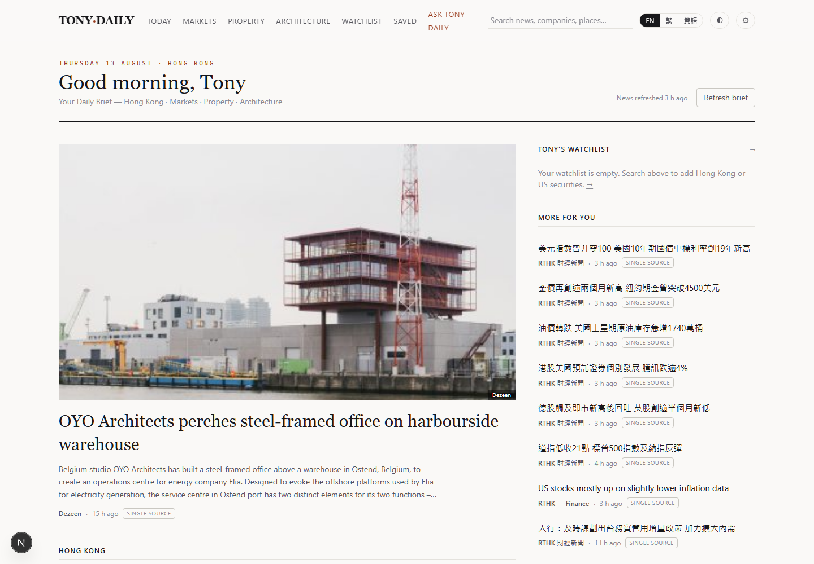
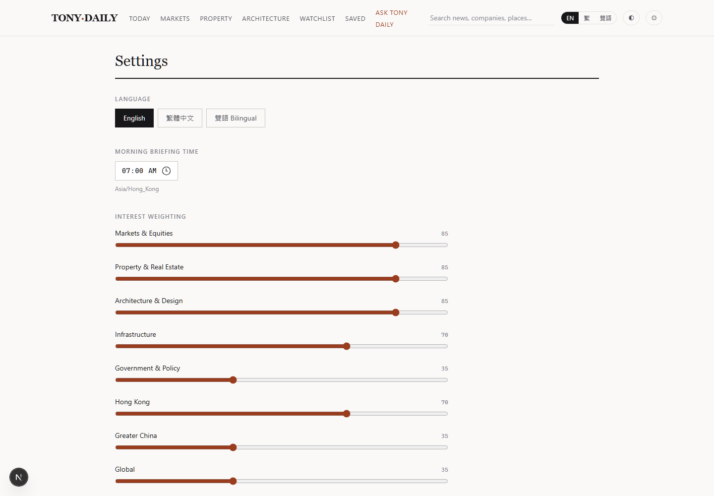

Hong Kong · Markets · Property · Architecture
A private daily intelligence terminal for the built environment.
Tony Daily gathers Hong Kong government filings, public-broadcaster reporting and specialist architecture media into one calm, bilingual morning briefing — then refuses to tell you anything it cannot trace back to a source.
Overview
Built for one reader, with one rule.
The product is a personal intelligence dashboard: a Bloomberg-style market strip, an editorial front page, a stock watchlist and a research assistant, tuned to a single reader's interests in Hong Kong markets, property development, architecture and infrastructure. The governing constraint is that nothing may be invented — not a headline, not a price, not a citation.
Daily Brief
Eight to fifteen stories that matter, grouped by Hong Kong, property, built environment, Greater China and global — not fifty low-value articles.
Bilingual by design
English, 繁體中文 or 雙語. Original headlines are never rewritten; translations and summaries are labelled as AI-assisted.
Watchlist & markets
Hong Kong and US securities behind a provider abstraction. Every price carries its fetch time and a conservative entitlement label.
Grounded assistant
Ask Tony Daily retrieves indexed sources before answering and cites them inline — or says the information is unavailable.
Interface
Minimal, architectural, information-rich.
Bloomberg density where data belongs, Apple restraint in the chrome, and generous photography for architecture and property. Light, dark and system themes carry equal readability.


Principles
What the system refuses to do.
Never invent. No fabricated news, prices, quotes, statistics, sources or URLs. If verified information is unavailable, the product says so and shows an empty state.
Provenance is mandatory. Every article keeps its publisher, original headline, original language, canonical URL, publication and ingestion timestamps, and a verification status.
Evidence is graded. Stories are labelled Primary source when they come from government or a regulator, Corroborated when independent outlets agree, and Single source otherwise.
Delayed is never called live. Market data carries its fetch time in HKT and a conservative entitlement label. A missing quote shows an error, never a plausible placeholder.
Retrieval before generation. The assistant answers only from retrieved sources and labelled market data, separates fact from interpretation, and never invents a cause for a price movement.
No synthetic imagery. An unavailable photograph is better than a misleading one; the fallback is a typographic placeholder, never a generated "news" image.
Publishers are respected. Only metadata and permitted excerpts are stored, feeds are polled politely, and paywalls and robots rules are never circumvented.
How it works
From feed to front page.
Eighteen RSS sources — Hong Kong Government News (EN and 繁, including the infrastructure and finance desks), RTHK, SCMP, BBC Business, Dezeen, ArchDaily and designboom — every endpoint verified live before it was committed.
Clustering is the part that needed real evidence rather than intuition. Plain word-overlap similarity produced zero clusters across 472 live articles, because publishers write the same event at very different lengths — a government notice reading "Building laws consultation begins" against a broadcaster's "Consultation on building management law reform begins" — while generic tokens like "Hong Kong" inflate unrelated pairs. Replacing it with IDF-weighted containment, calibrated against the live index, produced correct clusters with no false merges.
Run it
The application is a server, not a static page.
This page you are reading is static, and GitHub Pages serves it happily. The dashboard itself cannot live here: it needs a Node.js runtime, a database, scheduled feed ingestion and server-side API keys. It is built to deploy on a free Node host with a hosted SQLite database.
npm install && npm run dev. A hosted
instance is deliberately access-controlled — it is a private dashboard
built for one reader, not a public news site.